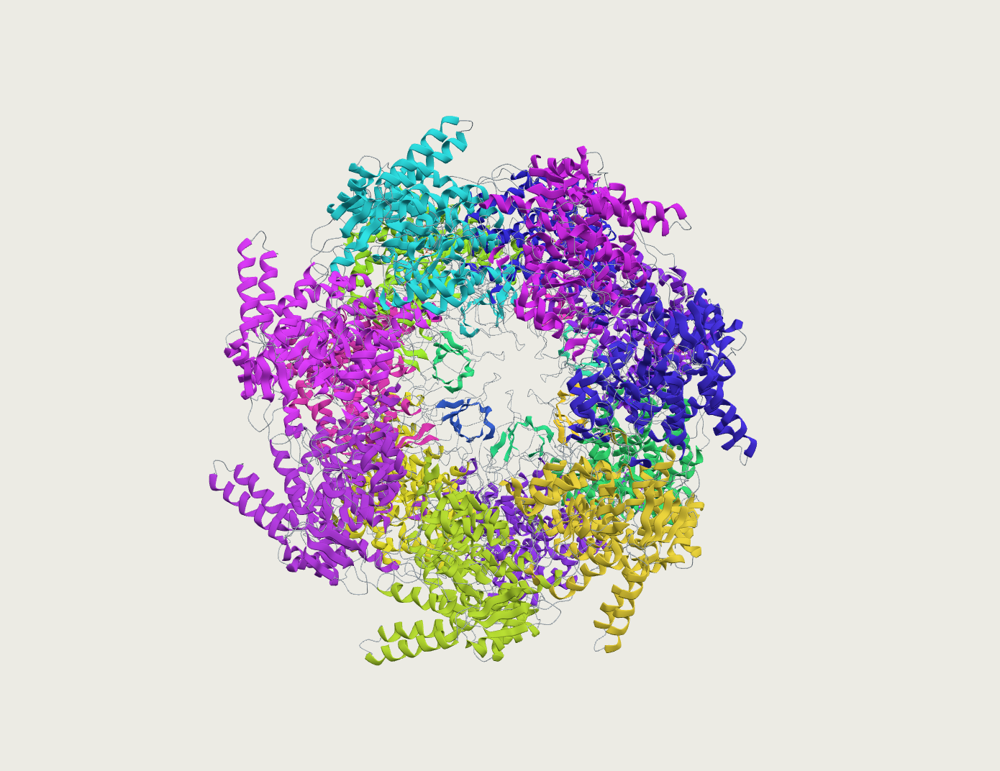
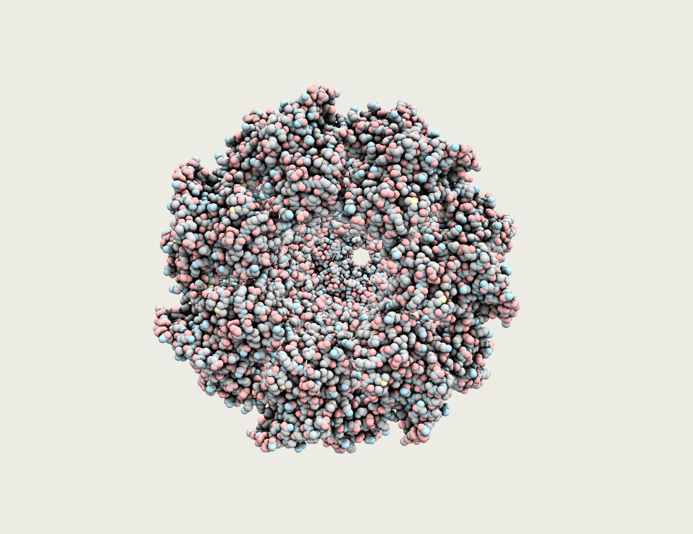
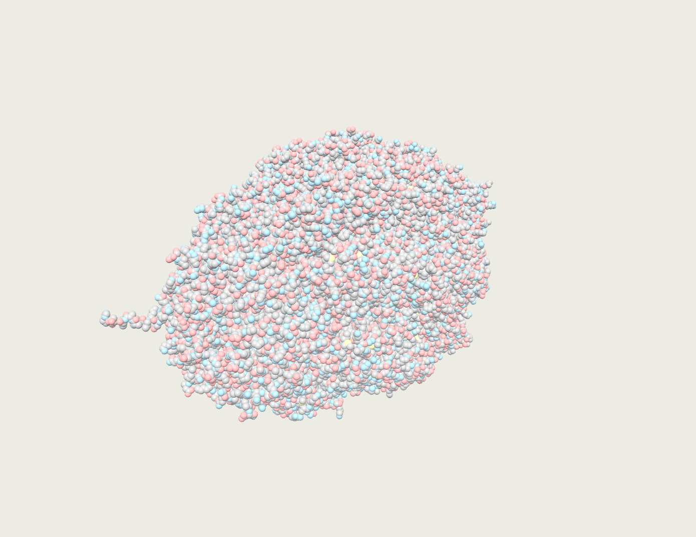
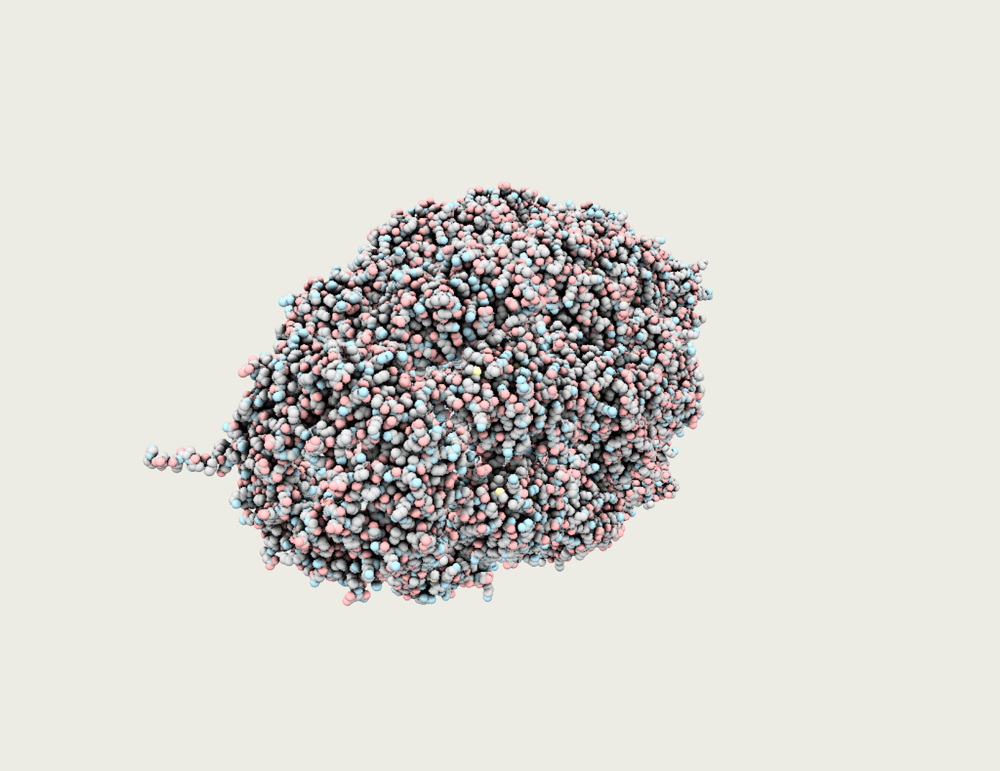
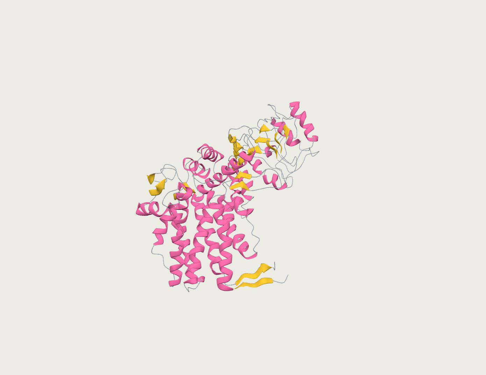

MOLECULAR STRUCTURE
Follow each chain
Full 1AON as a protein cartoon, colored by chain. The atomic source remains in the document.
Make this view →04 / EIGENVISTA FIELD MANUAL
Structures, folds and fields. Every image here is a real application capture, with source data and settings recorded.
01 / Depth studies
Compare molecular ambient occlusion on two large structures. The Pastel palette softens element colors while AO emphasizes contacts and cavities. These are visual depth cues, not electron-density maps.
 AO OFF
AO OFF
AO ON
AO OFF
AO ON02 / Representation studies

MOLECULAR STRUCTURE
Full 1AON as a protein cartoon, colored by chain. The atomic source remains in the document.
Make this view →
MOLECULAR STRUCTURE
An isolated 1AON chain showing deposited helices, sheets and connecting regions. Missing assignments remain unknown.
Make this view →
QUANTUM FIELD
An occupied orbital from the calculated water Molden example, displayed as a signed isosurface mesh. Opposite colors indicate the sign of amplitude.
Make this view →
QUANTUM FIELD
The same supplied water orbital in volume preview. Translucent accumulation reveals its extent without first generating a mesh.
Make this view →
QUANTUM FIELD
A sampled raycast of the synthetic signed-affine cube example. This mathematical field tests skew-grid and signed rendering; it is not a molecular calculation.
Make this view →Open an image for the full capture. Capture settings and source hashes · Data and palette credits
Use the supplied examples, then bring your own supported structures and quantum-chemistry files.